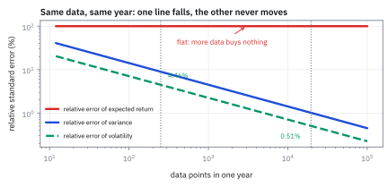
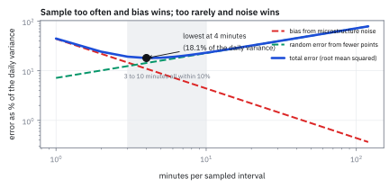
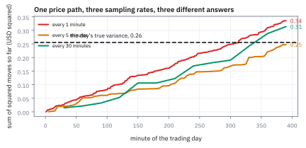
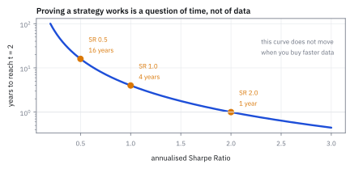

25.4 Realized Volatility from High-Frequency Data
ความผันผวนรู้ได้แม่นเท่าที่อยากรู้ ส่วนผลตอบแทนคาดหวังรู้ไม่ได้เลย
หุ้นตัวหนึ่งมีผลตอบแทนคาดหวัง 8% และความผันผวน 16% ต่อปี คุณมีข้อมูลหนึ่งปีเต็ม ถ้าเพิ่มจากราคาปิดรายวันเป็นราคาทุก 5 นาที คุณจะรู้ตัวเลขทั้งสองแม่นขึ้นแค่ไหน?
เฉลย: ความผันผวนแม่นขึ้นเกือบ 9 เท่า จาก ±0.71 จุด เหลือ ±0.08 จุด ส่วนผลตอบแทนคาดหวังไม่แม่นขึ้นเลยแม้แต่นิดเดียว ค่าคลาดเคลื่อนของมันยังเป็น 16% เท่าเดิม ต่อให้เก็บราคาทุกวินาที t ก็ยังเป็น 0.5 เท่าเดิม ทางเดียวที่จะรู้ผลตอบแทนคาดหวังแม่นขึ้นคือรอให้เวลาผ่านไปนานขึ้น และต้องรอถึง 16 ปีกว่าจะได้ t เท่ากับ 2
ศัพท์ที่ใช้ในหัวข้อนี้
- realized volatility (RV)
- ความผันผวนที่คำนวณโดยเอาผลตอบแทนช่วงสั้นมายกกำลังสองแล้วบวกกัน ใช้แทนการอนุมานความผันผวนจากแบบจำลอง
- diffusion process
- กระบวนการที่ราคาเคลื่อนต่อเนื่องด้วยแนวโน้มบวกเสียงรบกวนแบบ Brownian ใช้เป็นฐานของการวิเคราะห์ในหัวข้อนี้
- drift
- ส่วนของการเคลื่อนไหวที่เป็นแนวโน้มคาดหวัง ไม่ใช่เสียงรบกวน ใช้เรียกผลตอบแทนคาดหวังในภาษาของ diffusion
- maximum likelihood estimate (MLE)
- ค่าที่ทำให้โอกาสของข้อมูลที่เห็นสูงที่สุด ใช้เป็นวิธีมาตรฐานในการหาค่าที่ดีที่สุดจากข้อมูล
- uncentered estimator
- การคิด variance โดยไม่หักค่าเฉลี่ยออกก่อน ใช้ได้เพราะแนวโน้มเล็กกว่าเสียงรบกวนมากในช่วงสั้น
- standard error
- ขนาดความคลาดเคลื่อนโดยทั่วไปของค่าที่ประมาณได้ ใช้บอกว่าเชื่อตัวเลขได้กี่หลัก
- t-statistic
- ค่าที่คำนวณได้ เทียบเป็นกี่เท่าของความคลาดเคลื่อนของตัวมันเอง ใช้ตัดสินว่าต่างจากศูนย์จริงหรือแค่บังเอิญ
- bias
- ความผิดพลาดที่ไม่หายไปแม้เก็บข้อมูลมากขึ้น ใช้แยกจากความคลาดเคลื่อนแบบสุ่มที่เฉลี่ยแล้วหายไป
- mean squared error (MSE)
- ผลรวมของ bias กำลังสองกับ variance ใช้เป็นคะแนนรวมเวลาเลือกความถี่ในการเก็บราคา
- microstructure noise
- ความคลาดเคลื่อนของราคาจากกลไกตลาด ไม่ใช่จากข่าว ใช้เป็นตัวที่สู้กับการเก็บข้อมูลถี่ในหัวข้อนี้
- exponentially weighted moving average (EWMA)
- ค่าเฉลี่ยที่ให้น้ำหนักอดีตลดลงแบบ exponential ใช้เดินค่าความผันผวนไปข้างหน้าในหัวข้อ 25.5
- Generalized Autoregressive Conditional Heteroskedasticity (GARCH)
- แบบจำลองที่ให้ variance วันนี้ขึ้นกับ shock เมื่อวานและ variance เมื่อวาน ใช้เป็นทางเลือกของการวัดจากข้อมูลถี่
- subsampling
- การเฉลี่ยค่าที่คำนวณได้หลายชุดซึ่งเริ่มต้นต่างเวลากัน ใช้ลดความคลาดเคลื่อนโดยไม่เพิ่ม bias
- close-to-open return
- ผลตอบแทนข้ามคืนระหว่างราคาปิดกับราคาเปิดวันถัดไป ใช้เตือนว่าข้อมูลระหว่างวันไม่ครอบคลุมทั้งวัน
- Sharpe Ratio
- ผลตอบแทนคาดหวังต่อหนึ่งหน่วยความผันผวน ใช้วัดฝีมือ และในหัวข้อนี้คือตัวที่ตัดสินว่าต้องรอกี่ปี
- quadratic variation
- ผลรวมของการเคลื่อนไหวกำลังสองเมื่อซอยเวลาละเอียดขึ้นเรื่อย ๆ ใช้เป็นสิ่งที่ realized volatility พยายามวัด
สัญลักษณ์ที่ใช้ในหัวข้อนี้
| สัญลักษณ์ | ความหมาย | หน่วย |
|---|---|---|
| $p(t)$ | logarithm ของราคา ณ เวลา t | unitless |
| $\alpha$ | drift ต่อหนึ่งช่วงที่สังเกต | decimal |
| $\sigma$ | ความผันผวนต่อหนึ่งช่วงที่สังเกต | decimal |
| $n$ | จำนวนช่วงย่อยที่ซอยออกมา | จำนวน |
| $r(j)$ | ผลตอบแทนของช่วงย่อยที่ j | decimal |
| $\hat\alpha,\ \hat\sigma^2$ | ค่าที่คำนวณได้จากข้อมูล สำหรับ drift และ variance | decimal |
| $\sigma_\eta$ | ขนาดความคลาดเคลื่อนของการวัดราคา จากหัวข้อ 25.3 | decimal |
| $M$ | จำนวนนาทีซื้อขายต่อวัน ตลาดหุ้นสหรัฐฯ คือ 390 | นาที |
| $q$ | จำนวนนาทีต่อหนึ่งช่วงที่เก็บราคา | นาที |
| $T$ | จำนวนปีที่มีข้อมูล | ปี |
โจทย์: หุ้นที่รู้จักดี กับข้อมูลสองความละเอียด
โจทย์ให้อะไรมาบ้าง หุ้นตัวหนึ่งมีผลตอบแทนคาดหวัง 8% ต่อปีและความผันผวน 16% ต่อปี ซึ่งคือ Sharpe Ratio 0.5 มีข้อมูลหนึ่งปีเต็ม เลือกได้ระหว่างราคาปิดรายวัน 251 จุด กับราคาทุก 5 นาที ซึ่งได้ 78 จุดต่อวันหรือ 19,578 จุดต่อปี นอกจากนี้ใช้ตัวเลขความคลาดเคลื่อนจากหัวข้อ 25.3 คือ $\sigma_\epsilon$ = \$0.0256 และ $\sigma_\eta$ = \$0.0120 ต่อนาที
ต้องหาห้าอย่าง ความคลาดเคลื่อนของ drift และมันขึ้นกับ n หรือไม่ ความคลาดเคลื่อนของความผันผวนที่สองความละเอียด จำนวนปีที่ต้องรอกว่า drift จะมีนัยสำคัญ ขนาดของ bias ที่ความคลาดเคลื่อนของราคาสร้างขึ้นที่แต่ละความถี่ และความถี่ที่ทำให้ความผิดพลาดรวมต่ำที่สุด
ขั้นที่ 1 — แบบจำลองและสองสิ่งที่อยากรู้
นี่คือนิยามของกระบวนการและของสิ่งที่เราจะประมาณ ราคาในรูป logarithm เดินด้วยแนวโน้มคงที่บวกเสียงรบกวนแบบ Brownian สังเกตบนช่วง 0 ถึง 1 ปี โดยซอยเป็น n ช่วงย่อยเท่า ๆ กัน
สูตรอันที่สองไม่ได้หักค่าเฉลี่ยออกก่อน ซึ่งดูเหมือนผิดหลักสถิติ แต่ในช่วงเวลาสั้น ๆ แนวโน้มเล็กกว่าเสียงรบกวนมาก การหักมันออกจึงได้ไม่คุ้มเสีย และขั้นที่ 3 จะแสดงว่า bias ที่เกิดขึ้นเล็กแค่ไหน
ทั้งสองอย่างอยู่บนข้อมูลชุดเดียวกันเป๊ะ ๆ นั่นคือสิ่งที่ทำให้ผลลัพธ์ที่กำลังจะมาถึงน่าตกใจ ข้อมูลชุดเดียวกันบอกเรื่องหนึ่งได้แม่นขึ้นเรื่อย ๆ และบอกอีกเรื่องหนึ่งไม่ได้ดีขึ้นเลย
ขั้นที่ 2 — drift: ซอยละเอียดแค่ไหนก็ไม่ช่วย
ผลรวมของผลตอบแทนย่อยทั้งหมดยุบเป็นผลต่างของปลายทั้งสองข้าง ทุกจุดที่อยู่ตรงกลางหักกันหมด นี่คือทั้งหมดของเรื่อง
บรรทัดแรกคือหัวใจ ผลรวมยุบเหลือแค่ราคาปลายลบราคาต้น ข้อมูลทุกจุดตรงกลางหายไปหมด ไม่ว่าจะเก็บทุกนาทีหรือทุกมิลลิวินาที คำตอบเท่าเดิมเป๊ะ
ความหมายบนโต๊ะจริงคือ ถ้าจะรู้ว่ากลยุทธ์ทำเงินได้จริงหรือไม่ ไม่มีทางลัด ข้อมูลที่ละเอียดขึ้นซื้อเวลาไม่ได้ ต้องรอให้เวลาผ่านไปจริง ๆ เท่านั้น นี่คือเหตุผลเชิงคณิตศาสตร์ว่าทำไมการทดสอบย้อนหลังถึงอันตรายนัก และเป็นที่มาของทั้งบทที่ 29
ขั้นที่ 3 — variance: ซอยละเอียดขึ้นช่วยได้จริง
หาค่าเฉลี่ยและความคลาดเคลื่อนของตัวที่สอง ใช้โมเมนต์ของก้อน Normal ที่มีค่าเฉลี่ย $\alpha/n$ และ variance $\sigma^2/n$ ผลที่ได้ต่างจากขั้นที่แล้วโดยสิ้นเชิง
บรรทัดแรกบอกว่า bias จากการไม่หักค่าเฉลี่ยออกก่อน มีขนาดเท่ากับ drift กำลังสองต่อจำนวนจุด ซึ่งหดลงเมื่อจุดมากขึ้น ที่ 19,578 จุด และ drift 8% ค่านี้เป็น 3.3 × 10⁻⁷ เทียบกับ variance จริง 0.0256 คือเล็กกว่าหนึ่งในเจ็ดหมื่น ทิ้งได้สบายใจ
บรรทัดที่สามคือคำตอบของทั้งหัวข้อ ความคลาดเคลื่อนสัมพัทธ์ของ variance หดลงเหมือนหนึ่งส่วนรากที่สองของจำนวนจุด ต่างจาก drift ที่ไม่หดเลย เหตุผลเชิงกายภาพคือ variance เป็นของที่สะสมตามเวลา ยิ่งดูละเอียดยิ่งเห็นการสะสมชัด ส่วน drift เป็นของที่ถูกกลบด้วยเสียงรบกวนที่โตด้วยรากที่สองของเวลาเช่นกัน
ครึ่งหนึ่งในบรรทัดสุดท้ายมาจากการถอดราก ถ้า variance คลาดไป 1% ความผันผวนคลาดไปราวครึ่งหนึ่งของ 1%
Figure 25.4a — เก็บข้อมูลถี่ขึ้นช่วยความผันผวน แต่ไม่ช่วยผลตอบแทนคาดหวัง

แกนนอนคือจำนวนจุดข้อมูลในหนึ่งปี บนสเกล logarithm แกนตั้งคือความคลาดเคลื่อนสัมพัทธ์ เส้นแบนคือ drift ซึ่งไม่ขยับเลยตลอดสามอันดับของขนาด เส้นที่ลาดลงคือความผันผวน ซึ่งลดลงตามรากที่สองของจำนวนจุด สองเส้นนี้มาจากข้อมูลชุดเดียวกัน
ขั้นที่ 4 — ใส่ตัวเลขของโจทย์
แทนค่า n ทั้งสองแบบลงในสูตรของขั้นที่ 3 แล้วเทียบกับจำนวนปีที่ต้องรอเพื่อให้ drift มีนัยสำคัญ สังเกตว่าอันหลังใช้สูตรของขั้นที่ 2 ซึ่งไม่มี n อยู่เลย มีแต่จำนวนปี
คำตอบคือ ข้อมูลรายนาทีซื้อความแม่นของความผันผวนได้ 8.8 เท่า และซื้อความแม่นของผลตอบแทนคาดหวังได้ศูนย์เท่า ตัวเลข 16 ปีในบรรทัดสุดท้ายคือสิ่งที่ทำให้อาชีพนี้ยาก กลยุทธ์ที่มี Sharpe Ratio 0.5 ต้องรัน 16 ปีถึงจะพิสูจน์ตัวเองได้ที่ระดับ t เท่ากับ 2
ตรวจเองใน 10 วินาที จำนวนจุดต่างกัน 78 เท่า ความแม่นควรดีขึ้นด้วยรากที่สองของ 78 ซึ่งคือ 8.8 ตรงกับที่คำนวณยาว ๆ พอดี
พลิกอีกด้าน กลยุทธ์ที่มี Sharpe Ratio 2.0 ต้องการแค่ $T=(2/2)^2$ คือหนึ่งปี นั่นคือเหตุผลที่ Sharpe Ratio ไม่ได้เป็นแค่ตัววัดผลงาน แต่เป็นตัวกำหนดว่าจะรู้ผลงานตัวเองได้เร็วแค่ไหน ซึ่งเป็นแก่นของหัวข้อ 32.1
แล้วเอาไปใช้ทำอะไรได้จริงบ้าง
ถ้าหยุดอ่านแค่ขั้นที่ 4 จะสรุปผิดว่า “เก็บให้ถี่ที่สุดเท่าที่ทำได้” แต่หัวข้อ 25.3 เพิ่งแสดงว่าราคาที่เก็บถี่เกินไปวัดเสียงรบกวนมากกว่าวัดหุ้น สองแรงนี้ดึงกันคนละทาง และจุดที่มันสมดุลคือคำตอบที่ใช้จริง
งานจริงบนโต๊ะจึงไม่ได้เลือกความถี่ที่สูงที่สุด แต่เลือกความถี่ที่ทำให้ความผิดพลาดรวมต่ำที่สุด และคำตอบที่ได้จากทั้งทฤษฎีและการทดสอบเชิงประจักษ์ตรงกันอย่างน่าทึ่ง
ขั้นที่ 5 — เสียงรบกวนดันกลับ
ใช้ผลจากหัวข้อ 25.3 การเคลื่อนไหวจริงสะสมตามจำนวนช่วง แต่ความคลาดเคลื่อนโผล่สองครั้งต่อช่วงเสมอ เมื่อวันหนึ่งยาว $M$ นาที และเก็บราคาทุก $q$ นาที จำนวนช่วงในวันนั้นคือ $M/q$
จุดสำคัญคือ bias ตัวนี้ไม่หายไปเมื่อเก็บข้อมูลหลายวัน มันเป็นความผิดที่เอนไปทางเดียวเสมอ ต่างจากความคลาดเคลื่อนแบบสุ่มที่เฉลี่ยแล้วหายไป ยิ่งเก็บถี่ยิ่งแย่ลง ซึ่งสวนทางกับสัญชาตญาณและสวนทางกับขั้นที่ 3 พอดี
ขั้นที่ 6 — จุดที่ความผิดพลาดรวมต่ำที่สุด
รวมสองแรงเข้าด้วยกัน ความผิดพลาดรวมคือ bias กำลังสองบวก variance อันแรกโตเมื่อ q เล็ก อันหลังโตเมื่อ q ใหญ่ เพราะจุดข้อมูลน้อยลง หาจุดต่ำสุดด้วยตัวเลขของโจทย์
คำตอบคือ 4 นาที ซึ่งใกล้เคียงกับสิ่งที่คนทำงานจริงลงเอยกันด้วยการลองผิดลองถูกมาหลายสิบปี คือ 5 นาที เป็นเรื่องน่ายินดีเวลาทฤษฎีกับนิ้วหัวแม่มือของคนทำงานชี้ไปทางเดียวกัน
รูปร่างของเส้น MSE ก้นแบนมาก ตั้งแต่ราว 3 ถึง 10 นาที ความผิดพลาดรวมต่างกันไม่ถึง 10% นั่นแปลว่าไม่ต้องจูนตัวเลขนี้ให้เป๊ะ แค่อย่าไปอยู่ที่ 1 นาทีหรือ 1 ชั่วโมงก็พอ
Figure 25.4b — สองแรงที่ดึงกันคนละทาง และก้นที่แบนราว 3 ถึง 10 นาที

แกนนอนคือจำนวนนาทีต่อหนึ่งช่วง บนสเกล logarithm เส้นที่ลาดลงคือ bias จากเสียงรบกวน เส้นที่ลาดขึ้นคือความคลาดเคลื่อนแบบสุ่มจากการมีจุดน้อยลง เส้นหนาคือผลรวม จุดต่ำสุดอยู่ที่ 4 นาที และก้นแบนพอที่ 3 ถึง 10 นาทีจะให้ผลแทบเท่ากัน
Figure 25.4c — หนึ่งวันของ realized volatility ที่สามความถี่

ผลรวมสะสมของผลตอบแทนกำลังสองตลอดวันซื้อขายหนึ่งวัน เส้นบนสุดคือเก็บทุก 1 นาที ซึ่งไต่สูงเกินไปเพราะนับเสียงรบกวน 390 ครั้ง เส้นกลางคือทุก 5 นาที และเส้นล่างคือทุก 30 นาที เส้นประคือ variance จริงของวันนั้น ทั้งสามเส้นมาจากเส้นทางราคาเดียวกัน
Figure 25.4d — ต้องรอกี่ปีกว่าจะรู้ว่ากลยุทธ์ทำเงินได้จริง

แกนนอนคือ Sharpe Ratio ต่อปี แกนตั้งคือจำนวนปีที่ต้องรันจนได้ t เท่ากับ 2 บนสเกล logarithm ที่ Sharpe Ratio 0.5 ต้องรอ 16 ปี ที่ 1.0 ต้องรอ 4 ปี และที่ 2.0 ต้องรอ 1 ปี เส้นนี้ไม่ขึ้นกับความถี่ที่เก็บข้อมูลเลย
กับดัก: ใช้ข้อมูลถี่เพื่อ “ปรับปรุง” ผลตอบแทนคาดหวัง และลืมช่วงข้ามคืน
กับดักแรกคือคิดว่าข้อมูลรายนาทีทำให้ประมาณผลตอบแทนคาดหวังดีขึ้น ขั้นที่ 2 พิสูจน์แล้วว่าผลรวมยุบเหลือราคาปลายลบราคาต้น ไม่ว่าจะซอยกี่ครั้ง ถ้าเห็นใครรายงานว่า t ของผลตอบแทนคาดหวังสูงขึ้นหลังเปลี่ยนมาใช้ข้อมูลถี่ นั่นคือสัญญาณว่ามีบางอย่างผิด มักเป็นการนับข้อมูลซ้ำผ่านช่วงที่ทับกัน ซึ่งเป็นกับดักเดียวกับในหัวข้อ 25.3
กับดักที่สองคือลืมว่าตลาดปิดกลางคืน ผลรวมของผลตอบแทนระหว่างวันครอบคลุมแค่ 390 นาทีที่ตลาดเปิด แต่ผลตอบแทนรายวันคิดจากราคาปิดถึงราคาปิด ซึ่งรวมช่วงข้ามคืนด้วย ถ้าช่วงข้ามคืนกินไป 25% ของ variance รายวัน การใช้ realized volatility ระหว่างวันตรง ๆ จะต่ำกว่าจริงและต้องคูณด้วย 1.1547 เพื่อชดเชย ตัวเลขนี้ต้องประมาณจากข้อมูลจริงของแต่ละหุ้น ไม่ใช่เดา
กับดักที่สามคือใช้ความถี่เดียวกันกับทุกหุ้น 5 นาทีเหมาะกับหุ้นที่ซื้อขายหลายครั้งต่อนาที แต่สำหรับหุ้นที่ซื้อขายทุก 10 นาที ช่วง 5 นาทีครึ่งหนึ่งจะมีผลตอบแทนเป็นศูนย์เพราะไม่มีการซื้อขาย ไม่ใช่เพราะราคานิ่ง ค่าที่ได้จะต่ำกว่าจริง ความถี่ที่เหมาะสมขึ้นกับสภาพคล่องของแต่ละตัว
ที่มาที่ไป: คำถามที่ควรถามก่อนซื้อข้อมูล
ข้อมูลรายนาทีแพงกว่าราคาปิดรายวันหลายสิบเท่า ก่อนจ่ายเงิน ควรรู้ว่ามันช่วยอะไรได้บ้าง คำตอบไม่สมมาตรอย่างน่าประหลาด และเป็นความไม่สมมาตรที่กำหนดรูปร่างของอาชีพนี้ทั้งอาชีพ
ถ้าซอยหนึ่งปีออกเป็น n ช่วงย่อย แล้วประมาณทั้ง drift และ variance สิ่งที่จะได้คือ variance แม่นขึ้นเรื่อย ๆ ตาม n แต่ drift ไม่แม่นขึ้นเลยแม้แต่นิดเดียว เหตุผลอยู่ในสูตรสองบรรทัดที่กำลังจะอนุมาน และมันสั้นพอที่จะเห็นได้ด้วยตา
นั่นคือเหตุผลที่ทั้งอุตสาหกรรมนี้ทุ่มทรัพยากรไปกับแบบจำลองความเสี่ยงอย่างมหาศาล บทที่ 26 ถึง 28 ทั้งสามบทเป็นเรื่องนั้นล้วน ๆ ขณะที่การพยากรณ์ผลตอบแทนถูกจัดการด้วยความระแวงตลอดบทที่ 29 ไม่ใช่เพราะคนที่นั่นขี้ขลาด แต่เพราะข้อมูลบอกได้แค่นั้นจริง ๆ
ข้อจำกัด: วิธีนี้สมมติอะไร และของจริงเป็นอย่างไร
| เรื่อง | วิธีนี้สมมติว่า | ของจริงเป็นอย่างไร | ผลที่ตามมาเวลาใช้งาน |
|---|---|---|---|
| ความผันผวนภายในวัน | คงที่ตลอดวัน | สูงตอนเปิดและตอนปิด ต่ำช่วงกลางวัน | ค่าที่ได้เป็นค่าเฉลี่ยของวัน ใช้พยากรณ์ช่วงเปิดตลาดไม่ได้ตรง ๆ |
| ช่วงเวลาที่ครอบคลุม | ผลรวมระหว่างวันคือทั้งวัน | ช่วงข้ามคืนมี variance อีกก้อนที่ไม่ได้นับ | ต่ำกว่าจริงราว 10 ถึง 20% ต้องปรับด้วยค่าที่ประมาณจากข้อมูล |
| เสียงรบกวน | สุ่มใหม่ทุกครั้ง อิสระจากราคา | สัมพันธ์กับทิศของคำสั่งและกับขนาดการซื้อขาย | bias ใหญ่กว่าที่สูตรบอก ต้องวัดจาก volatility signature plot จริง |
| การกระโดดของราคา | ไม่มี ราคาเคลื่อนต่อเนื่อง | ข่าวทำให้ราคากระโดดจริง | วันที่มีข่าวใหญ่ ค่าที่วัดได้ปนทั้งความผันผวนปกติและการกระโดด ต้องแยกถ้าจะพยากรณ์ |
แถวที่สามคือเหตุผลที่คำตอบ 4 นาทีเป็นจุดเริ่มต้น ไม่ใช่คำตอบสุดท้าย งานจริงต้องวาด volatility signature plot จากข้อมูลของหุ้นนั้นเองแล้วดูว่าเส้นเริ่มแบนที่ไหน
ตรวจทุกตัวเลขของหัวข้อนี้
import numpy as np
sig_y, mu_y = 0.16, 0.08
# step 2: the drift estimate collapses to the endpoints, whatever n is
rng = np.random.default_rng(5)
for n in (251, 19578, 1_000_000):
r = rng.normal(mu_y / n, sig_y / np.sqrt(n), n)
p = np.concatenate([[0.0], np.cumsum(r)])
assert abs(r.sum() - (p[-1] - p[0])) < 1e-12 # every interior point cancels
assert abs(mu_y / sig_y - 0.5) < 1e-15
assert abs((2 * sig_y / mu_y) ** 2 - 16.0) < 1e-12 # 16 years for t = 2
assert all(abs(0.5 * np.sqrt(T) - t) < 1e-12 for T, t in ((1, .5), (4, 1.), (16, 2.)))
# step 3-4: the variance estimate does get sharper
rse = lambda n: 0.5 * np.sqrt(2 / n)
assert abs(rse(251) - 0.044632) < 1e-6
assert abs(rse(19578) - 0.0050530) < 1e-7
assert abs(sig_y * rse(251) - 0.0071411) < 1e-7 # +-0.714 points
assert abs(sig_y * rse(19578) - 0.00080848) < 1e-8 # +-0.081 points
assert abs(rse(251) / rse(19578) - np.sqrt(19578 / 251)) < 1e-9
assert abs(np.sqrt(19578 / 251) - 8.832) < 1e-3 # the 10-second check
assert abs(mu_y ** 2 / 19578 / sig_y ** 2 - 1.278e-5) < 1e-8 # the uncentered bias is nothing
# step 5: the noise bias, with 25.3's numbers
se, sn, M = 0.0256, 0.0120, 390
ratio = lambda q: 2 * sn ** 2 / (q * se ** 2)
assert abs(ratio(1) - 0.43945) < 1e-5
assert abs(np.sqrt(1 + ratio(1)) - 1 - 0.19977) < 1e-5
assert abs(np.sqrt(1 + ratio(5)) - 1 - 0.043045) < 1e-5
assert abs(np.sqrt(1 + ratio(30)) - 1 - 0.0072849) < 1e-6
# step 6: where the two forces balance
def mse(q):
m = M / q
return (2 * m * sn ** 2) ** 2 + 2 * m * (q * se ** 2) ** 2
qs = np.arange(1, 391)
best = int(qs[np.argmin([mse(q) for q in qs])])
assert best == 4
true_daily = M * se ** 2
assert abs(np.sqrt(mse(4)) / true_daily - 0.1805) < 1e-4
flat = [np.sqrt(mse(q)) / np.sqrt(mse(best)) for q in (3, 4, 5, 8, 10)]
assert max(flat) < 1.10 # the bottom really is flat
# the overnight correction quoted in the pitfall
assert abs(1 / np.sqrt(0.75) - 1.15470) < 1e-5บล็อกแรกไม่ได้เชื่อพีชคณิต แต่สุ่มเส้นทางราคาที่ n สามค่า ต่างกันเกือบสี่พันเท่า แล้วยืนยันว่าผลรวมเท่ากับราคาปลายลบราคาต้นทุกครั้ง ส่วนบล็อกสุดท้ายยืนยันว่าก้นของเส้น MSE แบนจริง ที่ 3 ถึง 10 นาทีต่างกันไม่ถึง 10%
ก่อนไปต่อ
ตอนนี้เรามีค่าความผันผวนที่วัดจากข้อมูลได้แล้ว แต่ยังไม่มีวิธีเดินมันไปข้างหน้า วันพรุ่งนี้ควรใช้ค่าของเมื่อวานล้วน ๆ หรือควรผสมกับค่าที่เคยประมาณไว้ และควรผสมด้วยสัดส่วนเท่าไร หัวข้อถัดไปตอบด้วยแบบจำลองเดียวที่ให้ทั้ง EWMA และ GARCH ออกมาเป็นกรณีพิเศษ
สรุปที่ใช้ได้จริง
- ผลรวมของผลตอบแทนย่อยยุบเหลือราคาปลายลบราคาต้น ความคลาดเคลื่อนของผลตอบแทนคาดหวังจึงเท่ากับความผันผวน และไม่มี n อยู่ในสูตรเลย ข้อมูลที่ละเอียดขึ้นซื้อเวลาไม่ได้
- ความคลาดเคลื่อนสัมพัทธ์ของ variance คือ $\sqrt{2/n}$ และของความผันผวนคือครึ่งหนึ่งของค่านั้น ข้อมูลทุก 5 นาทีจึงให้ความแม่น 8.8 เท่าของราคาปิดรายวัน
- กลยุทธ์ที่ Sharpe Ratio 0.5 ต้องรัน 16 ปีกว่าจะได้ t เท่ากับ 2 ที่ 1.0 ต้องรัน 4 ปี และที่ 2.0 ต้องรัน 1 ปี ตัวเลขนี้ไม่ขึ้นกับความถี่ที่เก็บข้อมูล
- เสียงรบกวนสร้าง bias เท่ากับ $2\sigma_\eta^2/(q\sigma_\epsilon^2)$ ซึ่งไม่หายไปแม้เก็บหลายปี ที่ 1 นาทีทำให้ความผันผวนพองขึ้น 20% ที่ 5 นาทีเหลือ 4.3%
- จุดที่ความผิดพลาดรวมต่ำที่สุดอยู่ที่ 4 นาที ซึ่งตรงกับ 5 นาทีที่คนทำงานใช้กันมานาน และก้นของเส้นแบนพอที่ 3 ถึง 10 นาทีจะให้ผลแทบเท่ากัน